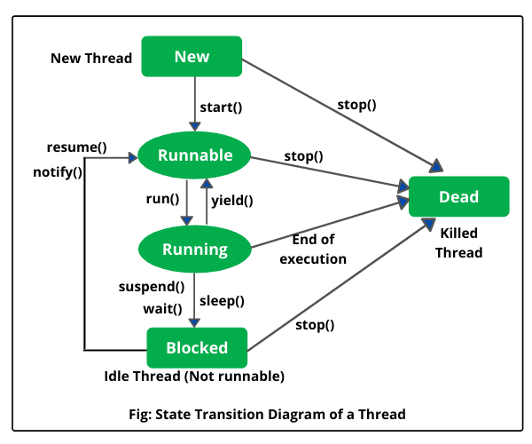
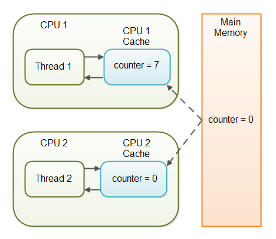
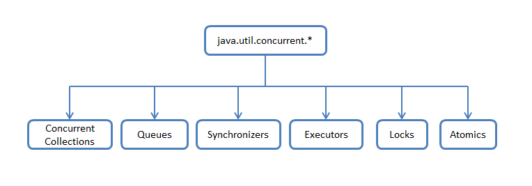

Вопросы и ответы для подготовки к собеседованиям
Вопросы:
Потоки выполнения процесса можно уподобить нескольким вместе работающим поварам. Все они готовят одно блюдо,
читают одну и ту же кулинарную книгу с одним и тем же рецептом и следуют его указаниям, причём необязательно
все они читают на одной и той же странице.
| Поток |
Процесс |
| Поток имеет стэк – свою память для исполнения. |
Процесс – это совокупность кода и данных, финкционирующих в виртуальном (адресном) пространстве.
|
| Потоки выполнения существуют как составные элементы процессов. |
Процессы, как правило, независимы. |
|
Несколько потоков выполнения внутри процесса совместно используют информацию о состоянии, а также
память и другие вычислительные ресурсы.
|
Несут значительно больше информации о состоянии. |
| Потоки выполнения совместно используют их адресное пространство. |
Операционная система (ОС) для каждого процесса создает своё, так называемое "виртуальное адресное
пространство" в памяти, к которому процесс имеет прямой доступ.
|
|
Взаимодействуют только через предоставляемые системой механизмы связей между процессами (файлы,
каналы связи..)
|
|
Переключение контекста между потоками выполнения в одном процессе, как правило, быстрее, чем
переключение контекста между процессами.
|
|
|
Потоки расходуют существенно меньше ресурсов, чем процессы, в процессе выполнения работы выгоднее
создавать дополнительные потоки и избегать создания новых процессов.
|
|
Когда запускается любое приложение, то начинает выполняться поток, называемый главным потоком (main).
От него порождаются дочерние потоки.
Главный поток, как правило, является последним потоком, завершающим выполнение программы.
Несмотря на то, что главный поток создаётся автоматически, им можно управлять через объект класса Thread.
Для этого нужно вызвать метод currentThread(), после чего можно управлять потоком.
Методы класса Thread
для управления потоками:
| Метод |
Описание |
| getName() |
получить имя потока |
| getPriority() |
получить приоритет потока |
| isAlive() |
определить, выполняется ли поток |
| join() |
ожидать завершение потока |
| run()* |
запуск потока
В нем пишется выполняемый код
|
| sleep() |
приостановить поток на заданное время |
| start() |
запустить поток
Запускает переопределенный метод run()
|
Если просто запустить run() не будет параллельности выполнения - просто выполниться
метод run().
| Thread |
Runnable |
| Класс |
Интерфейс |
| Можно наследоваться только от одного родительского класса Thread |
Можно имплементить много интерфейсов |
| Свои конструкторы и методы |
Только метод run() |
| Имплементируют Runnable |
|
Пример Thread:
public class ThreadTest {
public static void main(String[] args) throws InterruptedException {
AnotherTask thread = new AnotherTask();
thread.start();
for (int i = 0; i < 3; i++) {
System.out.println("m" + i);
Thread.sleep(1000);
}
thread.join();
System.out.println("End");
}
}
class AnotherTask extends Thread {
@Override
public void run() {
for (int i = 0; i < 5; i++) {
System.out.println("r" + i);
try {
Thread.sleep(1000);
}
catch (InterruptedException e) {
System.out.println("Interrupt");
}
}
}
}
Пример Runnable:
public class ThreadTest {
public static void main(String[] args) throws InterruptedException {
AnotherRun anotherRun = new AnotherRun();
Thread childTread = new Thread(anotherRun);
childTread.start();
for (int i = 0; i < 3; i++) {
System.out.println("m" + i);
Thread.sleep(1000);
}
childTread.join();
System.out.println("End");
}
}
class AnotherRun implements Runnable {
@Override
public void run() {
for (int i = 0; i < 5; i++) {
System.out.println("r" + i);
try {
Thread.sleep(1000);
}
catch (InterruptedException e) {
System.out.println("Interrupt");
}
}
}
}
В классе Thread определены семь перегруженных конструкторов, большое количество методов, предназначенных
для работы с потоками, и три константы (приоритеты выполнения потока).
Конструкторы класса Thread:
Пример создания потока, который входит в группу, реализует интерфейс Runnable и имеет свое
уникальное название:
Runnable r = new MyClassRunnable();
ThreadGroup tg = new ThreadGroup();
Thread t = new Thread(tg, r, "myThread");
Группы потоков удобно использовать, когда необходимо одинаково управлять несколькими потоками.
Например, несколько потоков выводят данные на печать и необходимо прервать печать всех документов
поставленных в очередь. В этом случае удобно применить команду ко всем потокам одновременно, а не к
каждому потоку отдельно. Но это можно сделать, если потоки отнесены к одной группе.
Несмотря на то, что главный поток создаётся автоматически, им можно управлять. Для этого необходимо
создать объект класса Thread вызовом метода currentThread().
Наиболее часто используемые методы класса Thread для управления потоками:
| Метод |
Описание |
| long getId() |
получение идентификатора потока |
| String getName() |
получение имени потока |
| int getPriority() |
получение приоритета потока |
| State getState() |
определение состояния потока |
| void interrupt() |
прерывание выполнения потока |
| boolean isAlive() |
проверка, выполняется ли поток |
| boolean isDaemon() |
проверка, является ли поток "daemon" |
| void join() |
ожидание завершения потока |
| void join(millis) |
ожидание millis милисекунд завершения потока |
| void notify() |
"пробуждение" отдельного потока, ожидающего "сигнала" |
| void notifyAll() |
"пробуждение" всех потоков, ожидающих "сигнала" |
| void run() |
запуск потока |
| void setDaemon(bool) |
определение "daemon" потока |
| void setPriority(int) |
определение приоритета потока |
| void sleep(int) |
приостановка потока на заданное время |
| void start() |
запуск потока |
| void wait() |
приостановка потока, пока другой поток не вызовет метод notify() |
| void wait(millis) |
приостановка потока на millis милисекунд или пока другой поток не вызовет метод notify()
|
-
Новый − Новый поток начинает свой жизненный цикл в состоянии нового.
Он сохраняет это состояние до тех пор, пока программа не запустит поток.
Его также называют созданным потоком.
-
Запущенный − После запуска нового потока он становится запущенным.
Считается, что поток в этом состоянии выполняет свою задачу.
-
Ожидающий − Поток приостановлен и ожидает, пока другой поток выполнит задачу.
Поток переходит обратно в запущенное состояние только после того, когда другой поток
сигнализирует
ожидающему потоку продолжить выполнение.
-
Ожидающий с ограничением по времени
− Поток в этом состоянии переходит обратно в запущенное состояние, когда
истекает этот временной интервал или когда происходит событие, которого он ожидает.
-
Остановленный − Запущенный поток переходит в остановленное состояние, когда он
завершает
свою задачу или иным образом завершается.

Мютекс ("mutual exclusion" — "взаимное исключение") – это специальный объект для синхронизации
процессов. Он может принимать два состояния – занят и свободен.
Если упростить, то мютекс – это boolean-переменная, которая
принимает два значения: занят(true) и свободен(false).
Когда процесс хочет монопольно владеть некоторым объектом, он помечает его мютекс занятым,
а когда закончил работу с ним – помечает его мютекс свободным.
Мютекс прикреплен к каждому объекту в JAVA.
От программиста он скрыт.
А работать с мютексом в JAVA можно посредством монитора.
Прямой доступ к мютексу есть только у Java-машины.
Монитор – это специальный механизм (кусок кода) который гарантирует, что только один поток может
выполнять
данный раздел (или разделы) кода в любой момент времени.
Надстройка над мютексом, который обеспечивает правильную работу с ним. Ведь мало пометить, что объект
занят,
надо еще обеспечить, чтобы другие потоки не пробовали воспользоваться занятым объектом.
В JAVA монитор реализован с помощью ключевого слова
synchronized.
Блок synchronized, то компилятор Java заменяет его тремя кусками кода:
- В начале блока synchronized добавляется код, который отмечает мютекс как занятый.
- В конце блока synchronized добавляется код, который отмечает мютекс как свободный.
-
Перед блоком synchronized добавляется код, который смотрит,
если мютекс занят – то поток должен ждать его освобождения.
Все immutable объекты являются thread-safe.
Все объекты, к которым происходит обращение из разных потоков, должны быть
thread-safe (потокобезопасен).
Только методы и блоки могут быть синхронизированы, но не переменные и классы.
Если метод, в котором содержится критически важная "многопоточная" логика, статический,
синхронизация будет осуществляться по классу.
Монитор – это доступ к блоку кода - synchronized.
Если создаем экземпляр статического вложенного класса,
то все что можно достать из объекта – принадлежит статическому классу.
Память для статического метода выделяется только один раз во время загрузки класса. Это означает, что
при выполнении статического метода весь класс блокируется!
Таким образом, другие статические синхронизированные методы также блокируются.
Если один поток выполняет статический синхронизированный метод, все остальные потоки, пытающиеся
выполнить любые статические синхронизированные методы, будут заблокированы.
Что является монитором у нестатического синхронизированного класса? – Объект.
В случае нестатического синхронизированного метода память выделяется многократно
при каждом вызове метода.
Синхронизация это механизм, позволяющий обеспечить целостность какого-либо ресурса (файл, данные в
памяти), когда он используется несколькими процессами или потоками в случайном порядке.
Синхронизация это процесс, который позволяет выполнять потоки параллельно.
В JAVA все объекты имеют одну блокировку, благодаря которой только один поток одновременно может
получить доступ к критическому коду в объекте. Такая синхронизация помогает предотвратить повреждение
состояния объекта.
Если поток получил блокировку, ни один другой поток не может войти в синхронизированный код, пока
блокировка не будет снята. Когда поток, владеющий блокировкой, выходит из синхронизированного кода,
блокировка снимается. Теперь другой поток может получить блокировку объекта и выполнить
синхронизированный код. Если поток пытается получить блокировку объекта, когда другой поток владеет
блокировкой, поток ждет пока блокировка не снимется.
Объявить метод синхронизированным можно только тогда, когда вся логика внутри него выполняется одним
потоком одновременно.
Недостаток
использования synchronized является как раз то, что другие потоки вынуждены ждать,
пока нужный объект или метод освободится.
Это создает так называемый "bottle neck" ("узкое место") в программе - и скорость
работы может пострадать.
-
Системная синхронизация с использованием wait()/notify()
Когда мы вызываем wait() – это заставляет текущий поток ждать, пока какой-либо другой поток
вызовет notify() или notifyAll() для того же объекта.
Поток, который ждет выполнения каких-либо условий, вызывает у этого объекта метод wait(),
предварительно захватив его монитор, wait() освобождает монитор и переводит поток в ожидание,
далее поток ждет notify().
На этом работа потока приостанавливается. Другой поток может вызвать на этом же самом объекте
метод notify() (опять же, предварительно захватив монитор объекта), в результате чего,
ждущий на объекте поток "просыпается" и продолжает свое выполнение.
Монитор надо захватывать в явном виде, через
synchronized-блок, потому как методы wait()/notify() не синхронизированы!
notifyAll() - Этот метод просто пробуждает все потоки, которые ожидают на мониторе этого
объекта.
-
Системная синхронизация с использованием join()
Метод join(), вызванный у экземпляра класса Thread, позволяет текущему потоку остановиться до
того момента, как поток, связанный с этим экземпляром, закончит работу.
Главный поток ставиться на паузу до окончания дочернего потока.
-
Использование классов из пакета java.util.concurrent
Пакет предоставляет набор классов для организации межпоточного взаимодействия.
Примеры таких классов – Atomic, Lock, Semaphore, ForkJoinTask и пр.
Концепция данного подхода заключается в использовании атомарных операций и переменных.
| wait() |
notify() |
|
Поток входит в блок Synchronized
Объект-монитор − занят
|
Методы notify/notifyAll можно вызвать у объекта-монитора и только, когда этот монитор занят –
т.е.
внутри блока synchronized.
Метод notifyAll снимает с паузы все потоки, которые стали на паузу с помощью данного
объекта-монитора.
|
|
Поток заблокировал монитор и не может работать дальше,
т.к. каких-то данных еще не хватает – поток останавливается и ждет их,
остальные потоки, которые ждут освобождения монитора, тоже ждут – очень дорого
|
|
Поток ставиться на паузу методом wait() - освобождает монитор для других потоков
|
"Висеть" на методе wait() одного монитора могут сразу несколько потоков.
При вызове notify() только один из них выходит из wait() и пытается захватить монитор,
а затем продолжает работу со следующего после wait() оператора.
Какой из них выйдет - заранее неизвестно.
А при вызове notifyAll(), все висящие на wait() потоки выходят из
wait(), и все они пытаются захватить монитор. Понятно, что в любой момент времени монитор может быть
захвачен
только одним потоком, а остальные ждут своей очереди. Порядок очереди определяется планировщиком потоков JAVA.
| Действие |
Состояние |
|
Thread twoThread = new Thread("Yulia");
|
Новый (New)
После создания экземпляра потока, он находится в состоянии "Новый" до тех пор, пока не вызван
метод start().
В этом состоянии поток не считается живым.
|
|
twoThread.start();
|
Работоспособный (Runnable)
Поток переходит в состояние "Работоспособный", когда вызывается метод start().
Поток может перейти в это состояние также из состояния "Работающий" или из состояния
"Блокирован".
Когда поток находится в этом состоянии, он считается живым.
|
| Планировщик потоков выбирает поток |
Работающий (Running)
Поток переходит из состояния "Работоспособный" в состояние "Работающий", когда Планировщик
потоков выбирает его как работающий в данный момент.
|
|
|
Живой, но не работоспособный
(Alive, but not runnable)
Поток может быть живым, но не работоспособным по нескольким причинам:
-
Ожидание (Waiting)
Поток переходит в состояние "Ожидания", вызывая метод wait().
Вызов notify() или notifyAll() может перевести поток из состояния "Ожидания" в
состояние "Работоспособный".
-
Сон (Sleeping)
Метод sleep() переводит поток в состояние 'Сна' на заданный промежуток времени в
миллисекундах.
-
Блокировка (Blocked)
Поток может перейти в это состояние, в ожидании ресурса, такого как ввод/вывод или
из-за блокировки другого объекта. В этом случае поток переходит в состояние
"Работоспособный", когда ресурс становится доступен.
|
|
run()
|
Мёртвый (Dead)
Поток считается мёртвым, когда его метод run() полностью выполнен.
Мёртвый поток не может перейти ни в какое другое состояние,
даже если для него вызван метод start().
|
Не из ждавы, но написано прикольно:

volatile - этот модификатор вынуждает потоки отключить оптимизацию доступа
и использовать единственный экземпляр переменной.
Если переменная примитивного типа – этого будет достаточно для обеспечения потокобезопасности.
Если же переменная является ссылкой на объект – синхронизировано будет исключительно значение этой ссылки.
Все же данные, содержащиеся в объекте, синхронизированы не будут!
Когерентность кэшей

Может случиться такое когда кэш ядра 1 (поток1) возьмет переменную и изменит её и кэш ядра 2 (поток2)
возьмет ту же переменную и изменит её.
Возможно, что она не будет равна. Тогда кэши не будут когерентны ("равны").
volotaile (изменчивый) – переменная может быть изменена, она не будет кэшироваться
(будет находиться в главной памяти), гарантирует когерентность кэшей.
Потоки-демоны работают в фоновом режиме вместе с программой, но не являются неотъемлемой частью программы.
Если какой-либо процесс может выполняться на фоне работы основных потоков выполнения и его деятельность
заключается в обслуживании основных потоков приложения, то такой процесс может быть запущен как
поток-демон с помощью метода setDaemon(boolean value)
вызванного у потока до его запуска.
Метод boolean isDaemon() позволяет определить,
является ли указанный поток демоном или нет.
Базовое свойство потоков-демонов заключается в возможности основного
потока приложения завершить выполнение с окончанием кода метода main(),
не обращая внимания на то, что поток-демон еще работает.
Планировщик потоков использует приоритет потока для принятия решений о том,
когда какому из потоков будет разрешено работать.
Теоретически высокоприоритетные потоки получают больше времени процессора, чем низкоприоритетные.
Практически объем времени процессора, который получает поток, часто зависит от нескольких
факторов помимо его приоритета.
Чтобы установить приоритет потока, используется метод класса Thread:
final void setPriority(int level)
Значение level изменяется в пределах:
от Thread.MIN_PRIORITY = 1
до Thread.MAX_PRIORITY = 10.
Приоритет по умолчанию: Thread.NORM_PRlORITY = 5.
Получить текущее значение приоритета потока можно вызвав у экземпляра класса Thread метод:
final int getPriority()
Метод
public final void join()
Метод приостанавливает выполнение текущего потока до тех пор, пока другой поток не закончит свое выполнение.
Если поток прерывается, бросается InterruptedException.
Thread t1 = new Thread(new MyRunnable(), "t1");
Thread t2 = new Thread(new MyRunnable(), "t2");
//стартуем 1й поток
t1.start();
try {
//ждем когда 1й поток завершит свою работу
t1.join();
} catch (InterruptedException e) {
e.printStackTrace();
}
//стартуем 2-й поток только после того, как 1 поток закончит свое выполнение
t2.start();
Метод join() имеет перегруженную версию, которая получает в качестве параметра время ожидания. В этом случае
join() возвращает управление либо когда завершится ожидаемый поток, либо когда закончится время ожидания.
Подобно методу Thread.sleep() метод join может ждать в течение миллисекунд и наносекунд – аргументы те же.
С помощью задания времени ожидания потока можно, например, выполнять обновление анимированной картинки пока
главный (или любой другой) поток ждёт завершения побочного потока, выполняющего ресурсоёмкие операции.
В то время как yield() может сделать только эвристическую
попытку (зависит от платформы и планировщика) приостановить
выполнение текущего потока без гарантии того, когда он будет запланирован назад,
sleep() может заставить планировщик приостановить выполнение
текущего потока как минимум на указанный период времени в качестве его параметра.
Thread.stop
Помечен как deprecated
(потому что он просто останавливал поток без какой-либо дополнительной работы).
Непотокобезопасен.
Thread.interrupt()
Только сообщает потоку о необходимости остановки.
Потокобезопасен.
Вызов этого метода устанавливает у потока статус, что он прерван.
Если разработчик не вставил обработку, то и поток не остановится.
Сам разработчик пишет выход из потока!
Пример:
If (условие выхода и isInterrupted()) then break;
Метод возвращает true, если поток может быть прерван,
в ином случае возвращается false.
clockThread.interrupt();
Метод interrupt() также пособен вывести поток из состояния ожидания или спячки.
Т.е. если у потока были вызваны методы
sleep() или wait()
– текущее состояние прервется и будет выброшено исключение InterruptedException.
Флаг в этом случае не выставляется.
isInterrupted()
Нестатический метод используется одним потоком для проверки статуса прерывания у другого потока,
не изменяя флаг прерывания.
Оба интерфейса предназначены для представления задачи, которая может выполняться несколькими потоками.
Основное отличие
Задачи Runnable можно запускать с помощью класса Thread или ExecutorService, тогда как Callables можно
запускать только с использованием последнего.
| Runnable |
Callable |
| появился в JAVA 1.0 |
в JAVA 5.0 в составе библиотеки java.util.concurrent (улучшенная версия) |
| Классы, реализующие интерфейс Runnable для выполнения задачи должны реализовывать метод run()
|
метод call()
public interface Callable<V> {
V call() throws Exception;
}
|
| Runnable.run() не принимает никаких параметров и не возвращает никаких значений |
Callable.call() возвращает объект Future, который может содержать результат вычислений |
| Метод run() не может выбрасывать проверяемые исключения |
Метод call() избавляет нас от необходимости на проверяемые исключения писать try-catch блоки |
Взаимная блокировка (deadlock) - явление при котором все потоки находятся в режиме ожидания.
Происходит, когда достигаются состояния:
-
Взаимного исключения:
по крайней мере один ресурс занят в режиме неделимости, следовательно, только один поток может
использовать ресурс в любой данный момент времени.
-
Удержания и ожидания:
поток удерживает как минимум один ресурс и запрашивает дополнительные ресурсы,
которые удерживаются другими потоками.
-
Отсутствия предочистки:
операционная система не переназначает ресурсы: если они уже заняты,
они должны отдаваться удерживающим потокам сразу же.
-
Цикличного ожидания:
поток ждёт освобождения ресурса другим потоком,
который в свою очередь ждёт освобождения ресурса заблокированного первым потоком.
Простейший способ избежать взаимной блокировки – не допускать цикличного ожидания.
Этого можно достичь, получая мониторы разделяемых ресурсов в определённом порядке
и освобождая их в обратном порядке.
livelock – тип взаимной блокировки, при котором несколько потоков выполняют бесполезную работу, попадая в
зацикленность при попытке получения каких-либо ресурсов.
При этом их состояния постоянно изменяются в зависимости друг от друга.
Фактической ошибки не возникает, но КПД системы падает до 0.
Часто возникает в результате попыток предотвращения deadlock.
Реальный пример livelock, – когда два человека встречаются в узком коридоре и каждый,
пытаясь быть вежливым, отходит в сторону, и так они бесконечно двигаются из стороны в сторону,
абсолютно не продвигаясь в нужном им направлении.
Состояние гонки (race condition) - ошибка проектирования многопоточной системы или приложения,
при которой эта работа напрямую зависит от того, в каком порядке выполняются потоки.
Состояние гонки возникает когда поток, который должен исполнится в начале, проиграл гонку и первым
исполняется другой поток: поведение кода изменяется, из-за чего возникают недетерменированные
(непредопределенные) ошибки.
Распространённые способы решения:
-
Использование локальной копии
Копирование разделяемой переменной в локальную переменную потока.
Этот способ работает только тогда, когда переменная одна и копирование производится атомарно
(за одну машинную команду), использование volatile.
-
Синхронизация
Операции над разделяемым ресурсом происходят в синхронизированном блоке
(при использовании ключевого слова synchronized).
-
Комбинирование методов
Вышеперечисленные способы можно комбинировать,
копируя "опасные" переменные в синхронизированном блоке.
С одной стороны, это снимает ограничение на атомарность, с другой — позволяет избавиться от слишком
больших синхронизированных блоков.
Очевидных способов выявления и исправления состояний гонки не существует.
Лучший способ избавиться от гонок — правильное проектирование многозадачной системы.
Фреймворк Fork/Join, представленный в JDK 7, -
это набор классов и интерфейсов позволяющих использовать
преимущества многопроцессорной архитектуры современных компьютеров.
Он разработан для выполнения задач, которые можно рекурсивно
разбить на маленькие подзадачи, которые можно решать параллельно.
Этап Fork:
Большая задача разделяется на несколько меньших подзадач, которые в свою очередь также разбиваются на
меньшие. И так до тех пор, пока задача не становится тривиальной и решаемой последовательным способом.
Этап Join:
Далее (опционально) идёт процесс "свёртки" - решения подзадач некоторым образом объединяются
пока не получится решение всей задачи.
Решение всех подзадач (в т.ч. и само разбиение на подзадачи)
происходит параллельно.
Для решения некоторых задач этап Join не требуется.
Например, для параллельного QuickSort — массив рекурсивно делится на всё меньшие и меньшие диапазоны, пока
не
вырождается в тривиальный случай из 1 элемента. Хотя в некотором смысле Join будет необходим и тут, т.к. всё
равно остаётся необходимость дождаться пока не закончится выполнение всех подзадач.
Ещё одно замечательное преимущество этого фреймворка заключается в том, что он использует
work-stealing алгоритм:
потоки, которые завершили выполнение собственных подзадач, могут "украсть" подзадачи у других потоков,
которые всё ещё заняты.
Расширить
Concurrent Collections (кратко)

Concurrent Collections
— набор коллекций, более эффективно работающие в многопоточной среде нежели стандартные универсальные коллекции
из java.util пакета. Вместо базового враппера Collections.synchronizedList с блокированием доступа ко всей
коллекции используются блокировки по сегментам данных или же оптимизируется работа для параллельного чтения
данных по wait-free алгоритмам.
Queues
— неблокирующие и блокирующие очереди с поддержкой многопоточности. Неблокирующие очереди заточены на скорость и
работу без блокирования потоков. Блокирующие очереди используются, когда нужно "притормозить" потоки "Producer"
или "Consumer", если не выполнены какие-либо условия, например, очередь пуста или перепонена, или же нет
свободного "Consumer"'a.
Synchronizers
— вспомогательные утилиты для синхронизации потоков. Представляют собой мощное оружие в "параллельных"
вычислениях.
Executors
— содержит в себе отличные фрейморки для создания пулов потоков, планирования работы асинхронных задач с
получением результатов.
Locks
— представляет собой альтернативные и более гибкие механизмы синхронизации потоков по сравнению с базовыми
synchronized, wait, notify, notifyAll.
Atomics
— классы с поддержкой атомарных операций над примитивами и ссылками.
источник
Перенести в Concurrent
Типы данных Atomic
Нужны что бы безопасно выполнять операции при параллельных вычислениях в нескольких потоках не используя при
этом ни блокировок, ни синхронизацию synchronized.
Атомарная (греч. άτομος — неделимое) операция — операция, которая либо выполняется целиком, либо не выполняется
вовсе; операция, которая не может быть частично выполнена и частично не выполнена.
Например, i++, который эквивалентен i = i + 1, не является атомарной. Чтение, плюсует один, записью.
Поскольку другой поток может написать в i между чтением и записью.
Отличие от volatile
volatile
принуждает использовать единственный экземпляр переменной,
но не гарантирует атомарность.
Например, операция count++ не станет атомарной просто потому что count объявлена volatile.
Класс AtomicInteger предоставляет атомарный метод для выполнения таких комплексных операций
атомарно, например getAndIncrement() – атомарная замена оператора инкремента,
его можно использовать, чтобы атомарно увеличить текущее значение на один. Похожим образом сконструированы
атомарные версии и для других типов данных.
Перенести в Concurrent
Семафор
Semaphore – это новый тип синхронизатора: семафор со счётчиком, реализующий шаблон синхронизации Семафор.
Доступ управляется с помощью счётчика:
изначальное значение счётчика задаётся в конструкторе при создании синхронизатора, когда поток заходит в
заданный блок кода, то значение счётчика уменьшается на единицу, когда поток его покидает, то увеличивается.
Если значение счётчика равно нулю, то текущий поток блокируется, пока кто-нибудь не выйдет из защищаемого блока.
Semaphore используется для защиты дорогих ресурсов, которые доступны в ограниченном количестве, например
подключение к базе данных в пуле.
Установить количество разрешений для доступа к ресурсу можно с помощью конструкторов класса Semaphore:
где:
permits
- указывает на количество допустимых разрешений для доступа к ресурсу;
fair
- позволяет установить очередность получения доступа.
Если он равен true, то разрешения будут предоставляться ожидающим потокам в том порядке, в каком они запрашивали
доступ. Если же он равен false, то разрешения будут предоставляться в неопределенном порядке.
Для получения разрешения у семафора надо вызвать метод acquire()
После вызова этого метода, пока поток не получит разрешение, он блокируется.
Для получения одного разрешения применяется первый вариант, а для получения нескольких разрешений - второй
вариант.
Для освобождения разрешение надо использовать метода release():
void release()
void release(int permits)
Первый вариант метода освобождает одно разрешение, а второй вариант - количество разрешений, указанных в
permits.
Перенести в Concurrent
FutureTask представляет собой отменяемое асинхронное вычисление в параллельном Java приложении.
java.util.concurrent.Future
- этот класс предоставляет базовую реализацию Future, с методами для запуска и остановки
вычисления, методами для запроса состояния вычисления и извлечения результатов. Результат может быть получен
только
когда вычисление завершено, метод получения будет заблокирован, если вычисление ещё не завершено.
Объекты FutureTask могут быть использованы для обёртки объектов Callable и Runnable. Так как FutureTask
реализует Runnable, его можно передать в Executor на выполнение.
Как связаны?
Stream API под капотом использует ForkJoinPool, а ForkJoinPool – часть Stream API.
Пакеты:
java.util.concurrent.*
java.util.stream.*
Stream API позволяет декларативно описать, что требуется получить без необходимости описывать, как это
делать. Чем-то это напоминает SQL при работе с базами данных.
В этом классе как раз и реализована хитрая логика по распределению нагрузки между реальными потоками.
В принципе, снаружи он выглядит практически как самый обычный пул потоков,
и особенностей в использовании нет.